| Half time
See ratemeters |
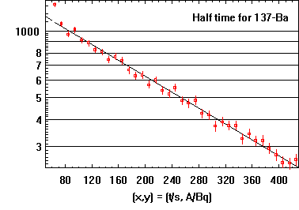 |
| Fixing salt
See thermometers |
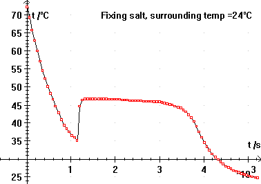 |
| Boyles law | 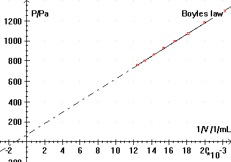 |
| Capacitor
See LabPro, CBL 2, Oscilloscopes |
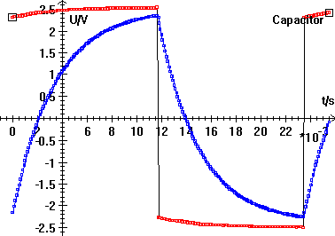 |
| Battery discharge
See multimeters |
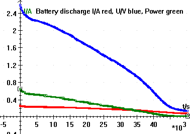 |
| Laplaces law
See multimeters and pressure measurers |
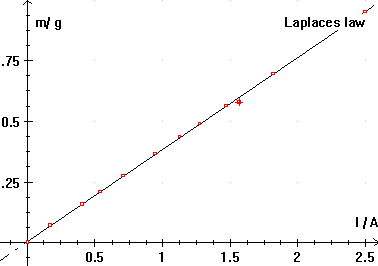 |
| Pt1000 resistor
See multimeters and thermometers |
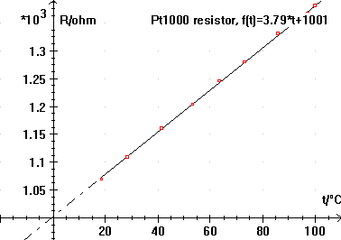 |
| Jumping ball | 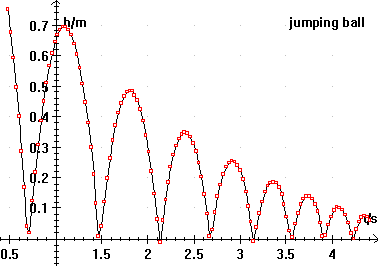 |
| Jumping ball | 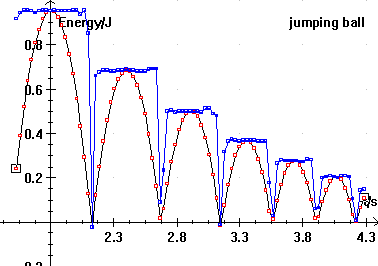 |
| Absorbans in permanganat | 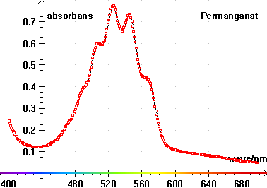 |
| Absorbans in green alga | 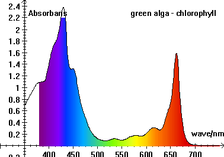 |
| Franck and Hertz
See multimeters |
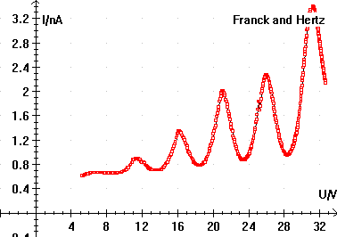 |
| Fluorescent lamp spectra | 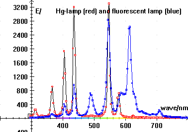 |
| Piano frequency spectrum
See sound card |
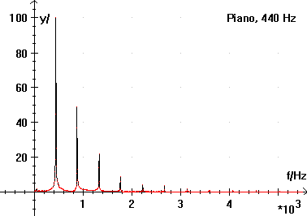 |
| Resonance in a cardboard tube
See sound card |
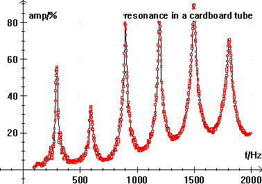 |